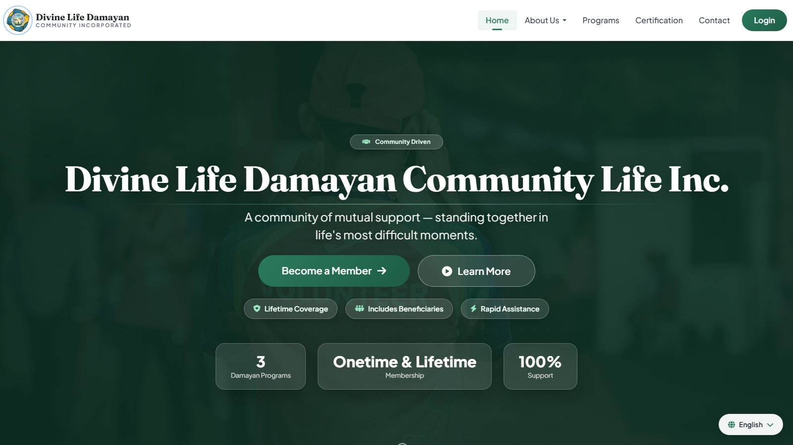
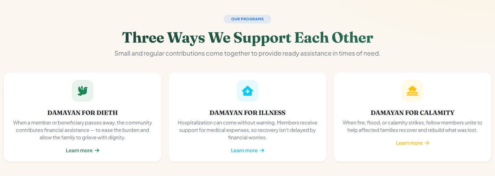
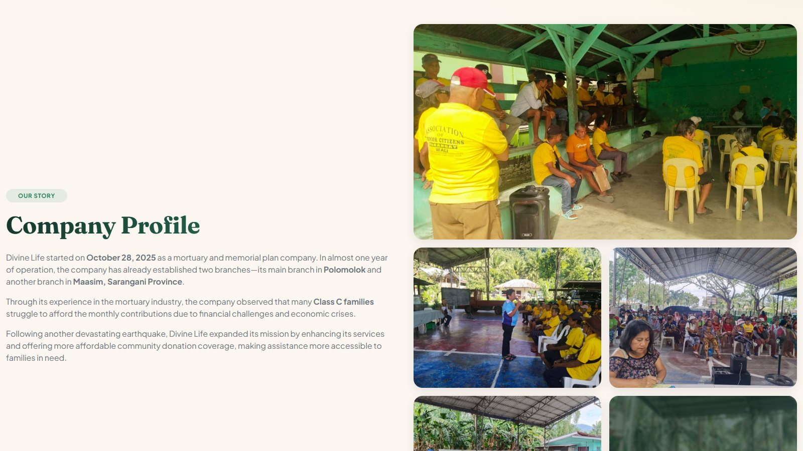
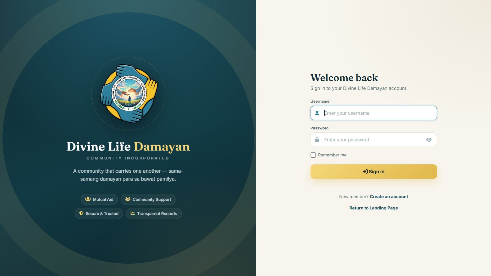

Case Study · 001
Divine Life Damayan

The problem
Divine Life Damayan Community Life Inc. is a mutual-aid organization serving lower-income families in Polomolok and Maasim, Sarangani Province. Members pool contributions to support each other through bereavement, hospitalization, and disasters — but everything ran on paper: registrations, contribution records, and claims were slow to process and hard to audit.
What I built
A full membership platform that moves the whole operation online while staying simple enough for members who mostly browse on budget phones:
- Member registration & login — lifetime membership with up to 4 designated beneficiaries per member.
- Over-the-counter payment processing — staff record contributions and the system keeps a transparent, auditable transaction trail.
- Claims tracking — bereavement, illness, and disaster-relief claims processed and traceable end-to-end.
- CMS-managed landing pages — staff update programs, announcements, and requirements without touching code.
- Multi-language support — English, Tagalog, and Cebuano, matching how members actually speak.
- Advocate program — a separate registration flow for community advocates who recruit members.



The result
The organization now runs 1,200+ registered members, 350+ families assisted, and 200+ claims processed through the platform — with records that used to live in logbooks now searchable in seconds. Built with PHP + MySQL and deployed on standard cPanel hosting, so the organization can afford to keep it running.